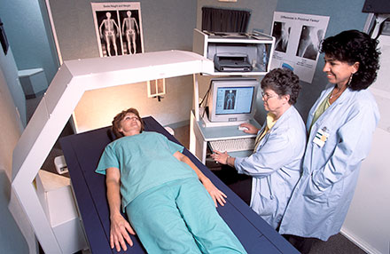

A umidade foi listada como um agente físico no passado e ainda está presente como um agente insalubre na NR-15. De qualquer forma, a exposição à umidade pode causar doenças ocupacionais, como a paroníquia crônica intertriginosa, mesmo sem a presença de um agente químico dissolvido. A exposição à umidade é considerada quando há exposição à água líquida e pode estar presente em uma série de atividades profissionais desenvolvidas em locais como:
O trabalhador tem contato com a umidade pela via cutânea. Algumas doenças podem ocorrer após uma exposição contínua a esse agente. Eventualmente, quando a água está contaminada por um agente biológico ou um produto químico – oriundos das rotinas de trabalho, por exemplo –, os agravos à saúde são mais graves.
A avaliação dos locais de trabalho, no que diz respeito a umidade e locais encharcados, é feita por meio de avaliação qualitativa. Essa avaliação é descrita na NR-15.
 Radiação é um fenômeno físico pelo qual a energia é transportada através de ondas eletromagnéticas. Estão presentes em nosso dia a dia em várias atividades, em diversas áreas e segmentos, inclusive no ambiente ocupacional.
São classificadas em dois grupos:
São de natureza eletromagnética e seus efeitos dependerão de fatores como comprimento de onda da radiação, duração e intensidade da exposição.
Clique ou toque nos títulos para expandir o conteúdo.
Radiação infravermelha
Pode causar queimaduras assim como a catarata, além de contribuir para a sobrecarga térmica imposta ao trabalhador.
Radiação ultravioleta
É encontrada em operações de solda elétrica, na fusão de metais. Seus efeitos principais para saúde são eritema, conjuntivite, câncer de pele e queimaduras.
Laser
É uma luz monocromática coerente. É encontrada cada vez mais na indústria de dragagem de túneis, construção de pontes, soldagem, tubulações, montagem de peças, balanceamento de rodas, fotografias, perfurações. Também é utilizada em outras atividades profissionais, como: levantamentos topográficos e geodésicos, na medicina (oftalmologia, microcirurgias, destruição de tumores, por exemplo) e nas comunicações.
Seus principais efeitos são queimaduras nos olhos e na pele. Conforme o tipo e a duração da exposição à radiação, isso pode ser muito grave.
No Brasil, a NR-15 trata desses tipos de radiação de forma qualitativa, mas algumas entidades da área de segurança, como a ACGIH (American Conference of Governmental Industrial Hygienists), indicam a necessidade de uma avaliação quantitativa desses agentes.
As radiações ionizantes produzem uma ionização (subdivisão de partículas neutras em eletricamente carregadas) nos materiais que incidem. Elas oferecem grande risco à saúde dos trabalhadores expostos. São provenientes de materiais instáveis (radioativos), os quais podem emitir radiação corpuscular alfa, beta e nêutrons e radiação eletromagnética do tipo gama, ou são produzidas artificialmente em equipamentos como os raios X.
As radiações ionizantes, dependendo de sua natureza, causam diversos males ao trabalhador. Os raios alfa e beta têm menor poder de penetração no organismo, entretanto são partículas com massa e podem provocar danos significativos, no caso da radiação alfa, mesmo sem grande poder de penetração.
Já os raios X e gama têm alto poder de penetração e entre os males causados incluem-se a leucemia, a anemia, o câncer e as alterações genéticas que podem comprometer fisicamente futuras gerações.
As mais encontradas são os raios gama, X e beta. As fontes de radiação alfa e nêutrons não são normalmente usadas em processos industriais. Podem ser encontradas na forma natural (urânio 238, potássio 40 e tório 232) ou produzidas artificialmente (iodo 131, cobalto 60, tântalo 182 e raio X).
Na medicina: para identificação, localização e combate de doenças.
Na indústria: os raios X e gama são utilizados na verificação de falhas em instrumentos metálicos; na identificação de soldas defeituosas. Fontes de radiações são utilizadas na avaliação de espessuras de lâminas metálicas, de vidro ou de plásticos; na verificação de desgastes de cera para piso, de ferramentas de torno, de anéis para motores de automóveis; na produção de energia elétrica.
Na pesquisa: os laboratórios utilizam reatores nucleares e aceleradores de partículas para descobrir novas partículas, conhecer estrutura de compostos químicos e para produzir novas fontes artificiais de radiações ionizantes.
A principal unidade envolvida no monitoramento dos trabalhadores é o Sievert (Sv). É uma unidade de dose equivalente. Proporciona uma indicação da magnitude da lesão biológica que poderá resultar como consequência da absorção de radiação pelo organismo. Esta unidade substitui o Rem (1 Rem = 0,01 Sv).
Os efeitos biológicos produzidos pelas radiações ionizantes são de diversos tipos e dependem dos fatores que seguem:
Em função da localização da fonte emissora, os efeitos podem ser classificados em:
Efeitos de fonte externa: são os efeitos produzidos por fontes de radiação ionizante que se encontram fora do organismo humano. Os raios X e gama, ondas eletromagnéticas, são as mais frequentemente encontradas e constituem o maior perigo quando provenientes de fonte externa.
Efeitos de fonte interna (contaminação): são os efeitos produzidos por radiações cuja fonte se depositou no interior do organismo por ingestão, inalação ou absorção através da pele. A presença dessa fonte no organismo é altamente perigosa por provocar uma exposição contínua até que a desintegração cesse ou a fonte seja eliminada do organismo. Os materiais emissores de partículas alfa e beta são as principais fontes de radiação interna. Seus efeitos dependerão da forma que foi absorvida bem como sua localização, porém, as partes mais afetadas são estrutura óssea, baço e rins.
Os efeitos podem ser precoces (aparecem dias ou semanas que se seguem à irradiação; síndrome nervosa para doses absorvidas acima de 50 Gy [gray]; síndrome gastrointestinal gerada pela destruição da mucosa intestinal; síndrome medular gerada pela morte das células mães da medula óssea; radiodermites pela destruição das células basais da epiderme) ou tardios (aparecem após 6 meses, um ano ou até vários anos após a irradiação; radiodermites; cancerização); conforme o dano é sofrido pela pessoa irradiada, podem ser somáticos (ocorrem no organismo da pessoa que foi atingida pela irradiação) ou genéticos (são mutações que ocorrem nos cromossomos ou genes das células germinativas cuja ocorrência depende da dose de irradiação acumulada nas gônadas masculina ou feminina dos indivíduos expostos e que causarão alterações em sua descendência).
É necessário considerar o fator tempo, ou seja, a maneira como a irradiação é distribuída no tempo. Pode se tratar de uma irradiação maciça, de curta duração, ou ao contrário, de uma irradiação liberada lentamente ou a pequenas doses que se acumulam progressivamente ao curso do tempo (por exemplo, radiologia).
As normas estabelecem alguns limites de tolerância para as radiações ionizantes.
No Brasil, a NR-15 faz referência às radiações ionizantes, mas a radioproteção é tratada pela norma CNEN NN 3.01, uma norma da Comissão Nacional de Energia Nuclear (CNEN).
Para saber mais sobre acidentes radiológicos, pesquise na internet sobre Césio 137 e Chernobil.


- Estar navegando no Google Chrome
ou
- Ter uma máquina virtual para criação de PDFs instalada no computador, como Adobe PDF e doPDF
O Google Chrome nativamente já oferece suporte para conversão de conteúdo HTML em PDF, diferentemente de Firefox, Internet Explorer e outros. Nestes casos, a máquina virtual é importante.
Envie o documento para impressão clicando no botão Imprimir ou usando o comando Ctrl + P.
Na opção Destino, altere a impressora para Salvar em PDF.
Clique em Imprimir.
Escolha um local para salvar o arquivo e, se necessário, altere o seu nome.
Clique em Salvar.